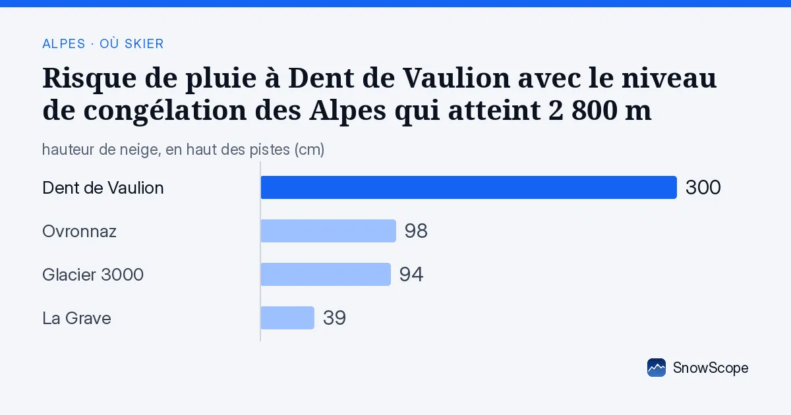

Risque de pluie à Dent de Vaulion avec le niveau de congélation des Alpes qui atteint 2 800 m
Ce week-end, les Alpes se divisent en deux mondes de neige : les pics hauts conservent la neige fraîche, mais les stations basses font face à la pluie jeudi. La Grave, leader régional à 3 543 m, restera dans la neige sèche tandis que le sommet de Dent de Vaulion à 1 465 m verra de la pluie alors que le niveau de congélation grimpe à 2 800 m.
Consultez les prévisions neige en temps réel pour Dent de Vaulion sur l'application SnowScopeHauteurs de neige, alertes poudreuse et carte 3D, gratuitement.
La Grave en tête avec de la neige profonde en approche
La Grave a 48 cm au sommet aujourd'hui, mesurés le 11 novembre. SnowScope prévoit 81 cm de nouvelle neige au cours des sept prochains jours au sommet—une bonne injection pour le début de saison.
La plus forte chute arrive jeudi, avec 52 cm attendus. Vendredi, 5 cm supplémentaires sont prévus, et samedi apporte 1 cm. C'est crucial : le niveau de congélation vendredi n'atteindra que 3 210 m à son pic, en dessous du sommet de 3 543 m de La Grave. Même samedi, le jour le plus chaud, les niveaux de congélation restent à 2 790 m, gardant la neige qui tombe au-dessus de cette hauteur. Cela signifie que le sommet reste blanc tout au long du week-end.
| Station | Hauteur de neige | Neige fraîche, 72 h | Attendu, jours suivants | Sommet |
|---|---|---|---|---|
| Dent de Vaulion | 300 cm | 0 cm | 0 cm | 1 465 m |
| Glacier 3000 | 94 cm | 26 cm | 33 cm | 2 931 m |
| Ovronnaz | 98 cm | 13 cm | 30 cm | 2 456 m |
| La Grave | 39 cm | 23 cm | 58 cm | 3 543 m |

Dent de Vaulion fait face à la pluie jeudi ; un avertissement pour les terrains inférieurs
Dent de Vaulion détient actuellement 300 cm de neige sur ses pentes supérieures—une base correcte pour le début novembre. Malheureusement, la masse d'air chaud de jeudi apportera des problèmes. Le niveau de congélation est prévu pour atteindre jusqu'à 2 800 m jeudi, bien au-dessus du sommet de la station à 1 465 m. Cela signifie que la pluie tombera à chaque altitude du domaine skiable.
De plus, aucune neige nouvelle n'est prévue pour Dent de Vaulion jusqu'à samedi ; il n'y a pas de poudreuse fraîche pour compenser les dégâts de la pluie. L'événement pluie-sur-neige de cette semaine testera sévèrement le manteau neigeux. Si vous envisagez Dent de Vaulion, attendez la semaine prochaine.
Glacier 3000 et Ovronnaz restent principalement au-dessus de la ligne de pluie
Glacier 3000 et Ovronnaz s'en tireront mieux que Dent de Vaulion jeudi, bien que les deux verront un peu de pluie aux altitudes inférieures lorsque de l'air chaud s'installe. Glacier 3000 se situe à 2 931 m au sommet, avec 14 cm de neige aujourd'hui. Ovronnaz culmine à 2 456 m avec 8 cm aujourd'hui.
Les deux stations vont recevoir une neige nouvelle importante jeudi : Glacier 3000 recevra 28 cm, et Ovronnaz 24 cm. Ces dépôts renforceront le manteau neigeux pour le ski. Vendredi et samedi seront encore mieux alors que les conditions se stabilisent et que le niveau de congélation baisse, permettant à la neige de s'étendre aux altitudes inférieures. Chaque station est prévue pour 5-6 cm vendredi, offrant d'excellentes conditions de ski pour le week-end.
Le tableau régional complet
Les Alpes en tant que région sont en transition. La zone couverte de neige a diminué de 45 820 km² le 9 novembre à 38 440 km² aujourd'hui alors que l'air chaud s'est installé. SnowScope prévoit une récupération à 46 730 km² samedi soir alors que l'air plus froid revient et que plus de neige tombe.
La prévision sur toute la chaîne est claire : jeudi est le jour de neige principal pour les Alpes hautes, vendredi est plus léger, et samedi voit une accumulation nouvelle minimale. La meilleure fenêtre pour skier la neige fraîche est vendredi, quand les dépôts de jeudi se sont légèrement consolidés mais restent faciles à skier.
Conseils de sécurité et conseils pratiques pour votre week-end
Avant d'aller hors-piste, lisez le bulletin officiel d'avalanche pour la zone que vous prévoyez d'explorer, en particulier après un événement pluie-sur-neige comme celui de jeudi. La neige de début de saison est mince : restez sur les pistes damées où la visibilité et la stabilité de la neige sont gérées.
Si vous envisagez Dent de Vaulion, reportez votre visite ; la pluie jeudi et pas de poudreuse fraîche en font un mauvais choix. Vérifiez le site web de votre station choisie pour les ouvertures de remontées, car toutes ne fonctionnent pas en début de novembre. La Grave, Glacier 3000, et Ovronnaz offrent tous des pistes au-dessus de la limite de congélation avec de la poudreuse qui arrive. Vendredi est votre meilleur pari : la neige de jeudi aura lié, mais elle offrira toujours du bon ski en poudre.
Conseils aux skieurs
- Visez La Grave (48 cm aujourd'hui, 81 cm prévus) où le niveau de congélation reste en dessous du pic vendredi. Évitez Dent de Vaulion ; la pluie de jeudi et pas de neige nouvelle en font un mauvais choix.
- Vendredi est le jour d'or : la grosse neige de jeudi (52 cm à La Grave, 28 cm à Glacier 3000) se consolidera légèrement mais restera skiable.
- Restez sur les pistes damées ; la neige de début de saison est mince et les rochers guettent en dessous dans de nombreuses zones.
- Lisez le bulletin officiel d'avalanche avant les descentes hors-piste ; la pluie-sur-neige de jeudi peut créer des couches faibles.
- Consultez les sites web des stations pour l'ouverture des remontées ; toutes ne fonctionnent pas en novembre.
À propos de ces chiffres
Les hauteurs de neige des stations sont la neige la plus épaisse sur le haut du domaine à la date indiquée ; ce sont des estimations pour une zone, pas une mesure en un point. Les prévisions peuvent changer. Consultez toujours le bulletin d'avalanche officiel avant le hors-piste.
Bulletins d'avalanche officiels: EAWS (Alps)
Citer ce bulletin
Pour la recherche, l'enseignement ou la presse : chiffres et graphiques réutilisables librement sous CC BY 4.0 avec cette citation.
SnowScope (2026), Risque de pluie à Dent de Vaulion avec le niveau de congélation des Alpes qui atteint 2 800 m, https://snowscope.app/blog/fr/2026/11/alps-where-to-ski-this-weekend-11-november-2026.html, consulté le 2026-11-11
SnowScope (Atlas Labs). (2026, November 11). Risque de pluie à Dent de Vaulion avec le niveau de congélation des Alpes qui atteint 2 800 m. SnowScope snow reports. https://snowscope.app/blog/fr/2026/11/alps-where-to-ski-this-weekend-11-november-2026.html
BibTeX
@misc{snowscope2026alpswheretoskithisweeken,
author = {{SnowScope (Atlas Labs)}},
title = {Risque de pluie à Dent de Vaulion avec le niveau de congélation des Alpes qui atteint 2 800 m},
year = {2026},
month = nov,
howpublished = {\url{https://snowscope.app/blog/fr/2026/11/alps-where-to-ski-this-weekend-11-november-2026.html}},
note = {Published 2026-11-11 18:44 UTC; accessed 2026-11-11}
}· CC BY 4.0 · Méthodes, données et outils →
Dent de Vaulion : neige et température selon l'altitude, cet hiver vs l'hiver dernier (outils) →
Suivre Dent de Vaulion
Gratuit : un message quand la neige arrive, et la météo chaque matin.